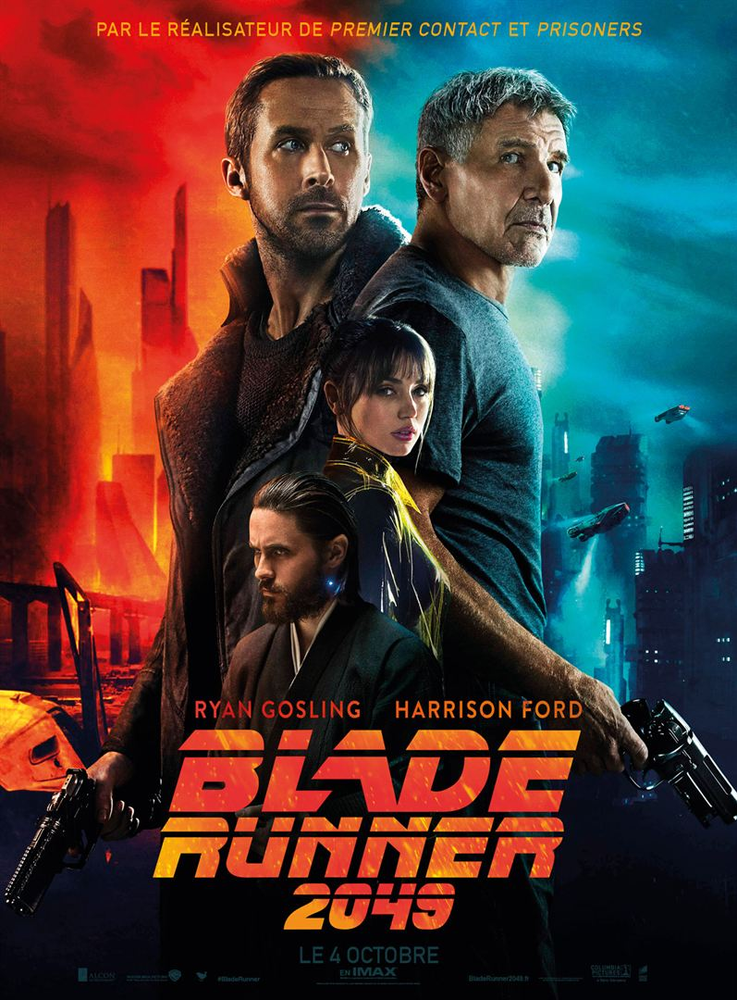
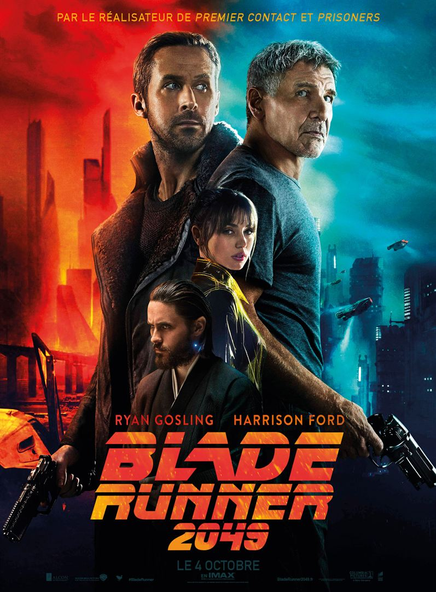
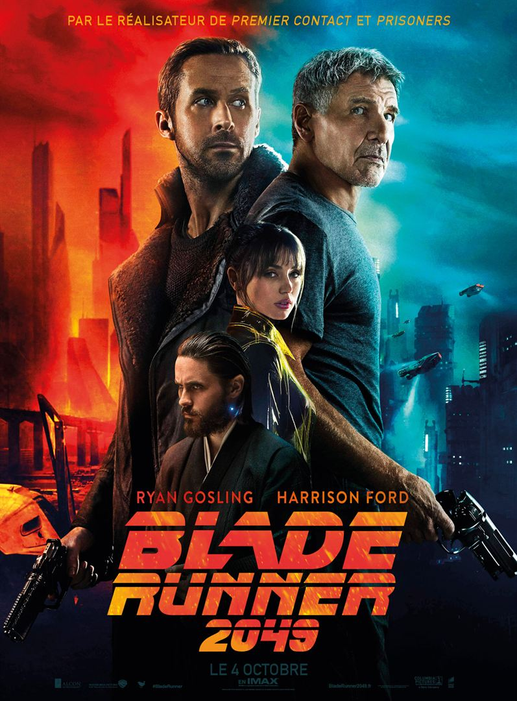
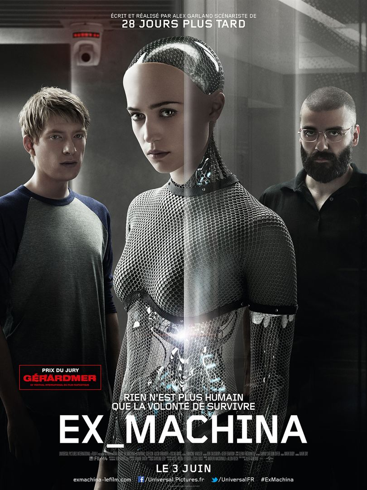
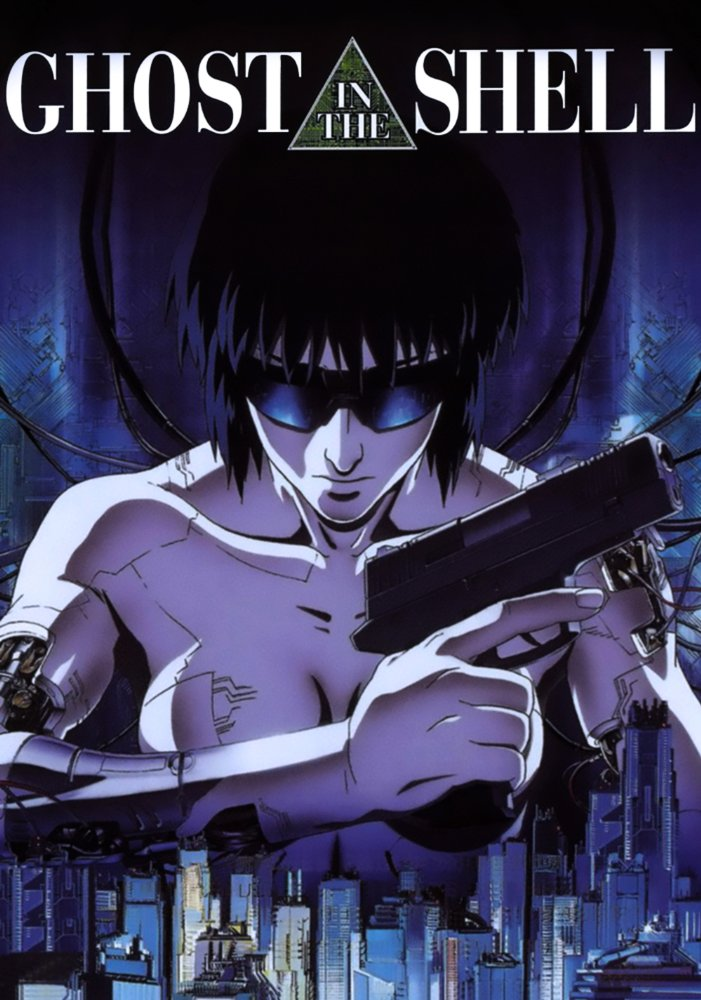
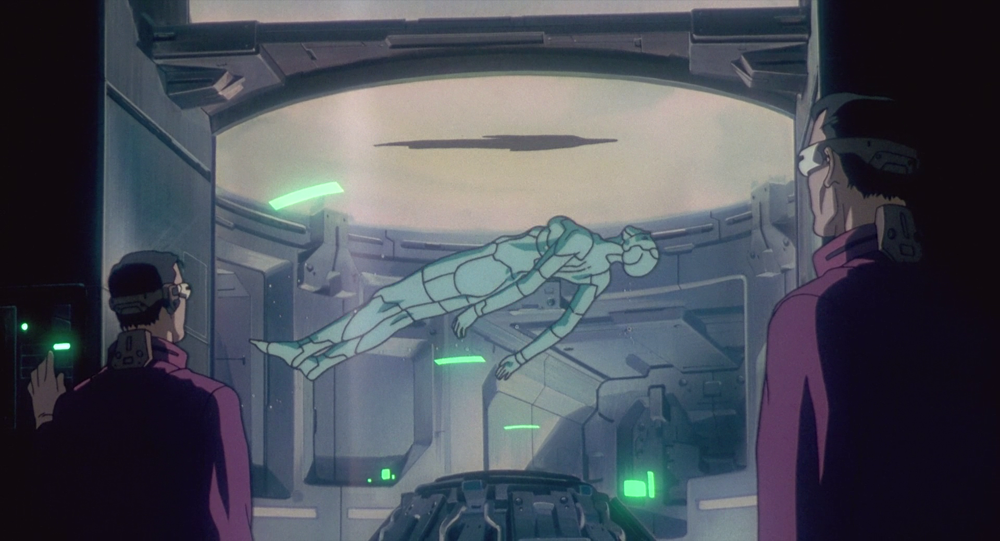
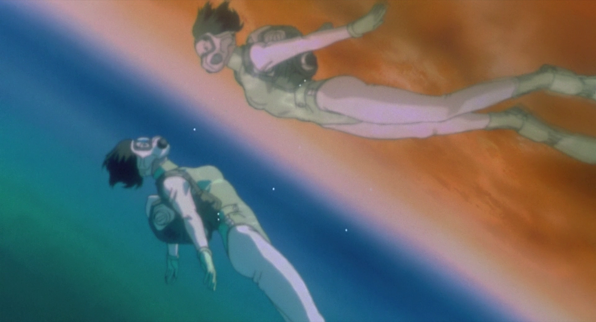

 

=======Cyberpunk:
* science is opposed to humanity and controled by the few
* dystopic
* paroxysm of individualism
* the heroes are marginalized and try to find a place out of society
Examples:
Matrix, Blade runner ... Post-cyberpunk
* science is globaly neutral
* may be optimistic
* characters are part of society and they don't want to escape it
* talks about the social impact of technology
======= >>>>>>> d4e988b1e3d2e1c923ee2e727c7048f0d12f663dcharacters
Major Motoko Kusanagi
Chief Daisuke Aramaki
Batou
Togusaspeech:
Section 9 chase the puppet master, a mysterious hacker implanting false memories in their victimes' ghost
While doing so, the Major, a full armored cyborg, starts to introspect.(the extract)
In very short:
A mysterious hacker - the puppet master - hack peoples ghost in what seems to be terrorist attacks.
<<<<<<< HEADThe puppet master is actually a spying program that became self-aware. The hacker wants to reach out to Motoko, so that they could propose her a merge, as they are alike and would complete each other. And so do they.
=======The pupet master is actually a spying program that became self-aware. The hacker wants to reach out to Motoko, so that they could propose her a merge, as they are alike and would complete each other. And so do they.
>>>>>>> d4e988b1e3d2e1c923ee2e727c7048f0d12f663dThe real story is the introspection of Motoko.
Several events in the movie makes her revise her status of “human being”.
Motoko’s body is not human
She also behaves deshumanized.
(the extract)
<<<<<<< HEAD
(the extract)

A ghost (the puppet master) is found in the memory of a brainless cyber body. Now Motoko starts to fear she might not even be human, but be entierly manufactured, like that ghost. She decides she absolutly need to find out by herselve by diving into that body, at all cost.
The puppet master propose her to merge, she accepts. She’s not confined anymore, and she is now sure of what she is: neither a human or a machine.
=======The puppet master hacks into his victims’ ghost in order to modify their memories and to make them act as he want them to. Because all the Major has is her memories, she starts to worry even that might be manufactured by someone. Seeking origin, she goes diving in order to feel what her making felt like. Because she doesn’t care about her body, she feels like her ghost is being confined, restrained in a shell that’s limiting her
A ghost (the pupet master) is found in the memory of a brainless cyber body. Now Motoko starts to fear she might not even be human, but be entierly manufactured, like that ghost. She decides she absolutly need to find out by herselve by diving into that body, at all cost.
The puppet master propose her to merge, she accepts. She’s not confined anymore, and she is now sure of what she is.
This is clearely a post-cyberpunk story.
Motoko chases after a cyber-body containing the puppet master's artificial ghost.
(Section 6 kidnaped it with a heavely handed commando operation in section 9 headquarters.)(the extract)
This is clearely a post-cyberpunk story.